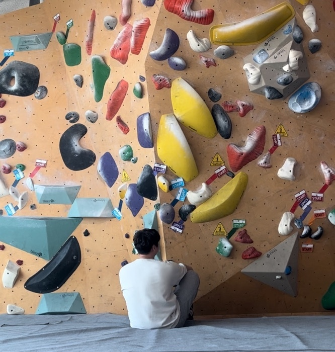

힘들 땐 벽을 타는 프론트엔드 개발자

클라이밍은 주어진 환경과 (신체적) 조건을 고려해 목표까지 성공적으로 도달해야 하는 스포츠 입니다. 목표를 도달하는 과정에서 주어진 여건에 대한 잘못된 계산, 성급한 접근 방식 등 다양한 원인에 의해 좌절하고 실패에 익숙해져야 하는 스포츠이기도 합니다. 하지만 포기하지 않고 노력하다 보면 결국 목표를 달성할 수 있는 매우 매력적인 운동입니다.
이는 개발자가 겪는 상황들과 많은 면에서 유사하다고 생각합니다. 아무리 복잡한 문제라도 멀리서 바라보기만 해서는 풀 수 없습니다. 저는 목표에 도달하기 위해 실패에 좌절하지 않고, 목표를 달성하기 위해 끊임없이 노력하는 개발자입니다.
연락처
010-5063-5505
이메일
shim5505@gmail.com